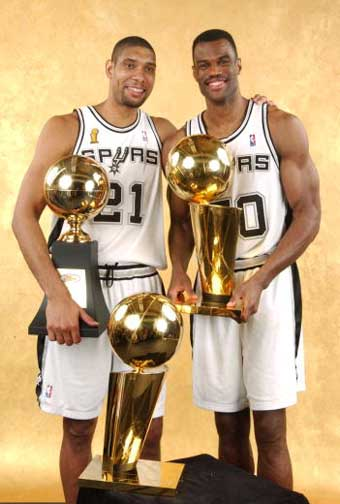

基本信息 1997-2003：双塔时期 1997-98赛季，在大卫·罗宾逊伤愈复出，以及蒂姆·邓肯加入之后，马刺队又再次完成了NBA历史上单个赛季上最大的胜场进步，球队赢下了56场比赛并打入了季后赛第二轮。邓肯毫无悬念地获得年度最佳新秀奖。在同犹他爵士队的西部半决赛第二场中，邓肯扭伤了脚踝，爵士队经过加时以109比106获胜。马刺队最终以1比4输掉了系列赛。 1998-99赛季，NBA因为劳资纠纷一度停摆，常规赛也因此从82场缩水到50场。马刺仅取得6胜8负的开局，主教练波波维奇因此饱受批评，但是球队领袖邓肯和罗宾逊都对他表示了坚定的支持，球队随后以31胜5负的战绩收尾。马刺在季后赛首轮3比1战胜森林狼，次轮4比0横扫湖人，西部决赛横扫开拓者，最终杀入总决赛，并以4比1战胜了纽约尼克斯队，这是马刺队历史上首次获得NBA总冠军，邓肯以27.4分、14个篮板和2.2次盖帽当选为总决赛MVP。选秀大会中，马刺队在次轮第57顺位选中来自阿根廷的马努·吉诺比利。之后吉诺比利继续留在意大利打球，到2002年才正式登陆NBA。 2000-01赛季，马刺取得了58胜24负的佳绩。季后赛第一轮3比1淘汰森林狼，西部半决赛4比1淘汰小牛。西部决赛中，马刺被当时如日中天的湖人队横扫。选秀大会中，马刺以首轮第28顺位选中19岁的法国控卫托尼·帕克。 2002-03赛季，马刺更新了“嘉年华彩色”队标，回归原始的银、黑图形，以纪念大卫·罗宾逊的最后一个赛季。马刺取得了60胜22负的常规赛成绩，这是波波维奇担任主帅以来首次率队取得60胜战绩，他也获得了自己的首个年度最佳教练奖。季后赛第一轮，马刺以4比2淘汰太阳。西部半决赛4比2淘汰老对手湖人，西部决赛4比2淘汰小牛。 总决赛，马刺击败篮网，赢得第二座NBA总冠军奖杯。邓肯包揽了常规赛和总决赛的MVP。他在总决赛中场均砍下24.2分17个篮板5.33次封盖5.3次助攻，加冕的第6战更是劈下21分20个篮板10次助攻8次盖帽的逆天数据，险些成为总决赛上达成四双壮举的历史第一人。 |